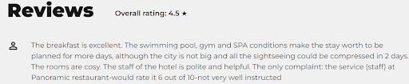

Booking Iasi
Authors:
- 2E1 group
Affiliation: University "Alexandru Ioan Cuza", Department of Computer Science
1. Introduction
1.1 Purpose
Booking Iasi is a comprehensive platform designed to help active people find and book various activities in the city of Iasi. The platform aims to provide users with a convenient and efficient way to discover adventurous trails, compare, and book rooms from different hotels in Iasi. By offering a user-friendly interface and a wide range of options, Booking Iasi seeks to enhance the overall experience of individuals looking to engage in physical activities and social events in the city.
2. Functionalities
2.1 User profile
This module takes care of the user’s data. When entering the website, a login form pops out. If you don’t have an account, you can create one simply by clicking the sign up button. This will redirect you to the sign up form.
After filling in all the fields, a user profile will be created and added in the database. Also, a cookie for the session will be set, so next time you will be visiting the website, you won’t have to log in again. After creating an account, you will be redirected to fill in your health form.
This form takes your fitness data, and uses them in order to recommend you different walking trails, based on difficulty being directly proportional with your fitness level. You have the ability to choose between multiple sports (running, football, basketball, etc.), and different intensity of practicing it, in order for the trails recommendations to be as precise as possible. Also it is recommended to also insert your height and weight, in order to receive the best user experience.
After you have finished filling in this form, you will be redirected to your user page, containing all your data. Here you have the option of editing your health data, profile information, or logging out. From here you will be able to access the hotels we provide.
2.2 Interior, 3D Model
This module provides immersive 3D panoramic views of hotel facilities such as rooms, pools, and conference rooms. Upon accessing the website, users can explore virtual tours of various areas within the hotel, enhancing their experience and aiding in decision-making. This interactive feature allows potential guests to navigate through high-quality, 360-degree images, offering a realistic preview of the hotel's amenities. Whether it's a luxurious suite, a serene pool area, or a state-of-the-art conference room, this module brings the hotel environment to life online.
On any hotel's page that supports 3D panoramic views, you can find the "Click to see the virtual tour!" button. Click this button to open an interactive 3D panoramic view, allowing you to explore the hotel's rooms, pools/spas and conference rooms in detail. Explore a panoramic tour of a hotel's rooms, spa/pool area, and conference room. Each tour can include multiple interconnected rooms. Within each panorama, there are various hotspots linked to other panoramas, as well as hotspots providing information about specific amenities found in that location. For example, you can find details about a TV in the hotel room or additional facilities like a minibar or hairdryer in the bathroom. To begin, select the area you want to explore from the options provided, such as "Hotel Room," "Spa," or "Conference Room," and navigate through the interactive 3D views.
2.3. Interior, Hotel Details
This module provides necessary information about hotels in the service of helping users make the right choice for their next stay on the road.
Features:
- check-in and check-out times, and opening hours, which helps when making a schedule;
- price ranges, to make sure you are able to budget reliably;
- features, showing whether it can meet the user’s needs (ex. seeing if pets are allowed);
- reviews, giving you some opinions from other users; 
- contact information, offering a way to reach out if you need more information.
Another big plus is the access to a 3D tour of supported hotels and surrounding attractions, guaranteeing a memorable stay. With images that showcase the hotel, these pages are sure to help the user in picking the location for their next vacation.
2.4 Hotel - Points of interest
This module illustrates different ways to present information about locations and attractions. The first image provides a detailed map of a specific area, while the second and third images focus on helping users explore and discover points of interest around their location.
The map includes a variety of features, including:
- A satellite view of the area: This allows users to see the layout of the surrounding area and get a sense of the hotel's location.
- Markers for nearby attractions: These markers are labeled with the names of the attractions, such as "Restaurant Panoramic" and "Tucano Coffee La Purna." Users can click on these markers to get more information about the attractions, such as descriptions, photos, and hours of operation.
- A search bar: This allows users to search for specific attractions or points of interest.
- A zoom function: This allows users to zoom in and out of the map to get a closer look at specific areas.
In addition to the map, the next two images also include a list of attractions located near the hotel. Each attraction is listed with its name, a short description, and a link to Google Maps directions. This allows users to easily find and navigate to the attractions that interest them.
2.5 Exterior, Hotel Trails
This module provides three different types of tracks: easy, medium and hard. Depending on the user's profile and/or demands, these trails are designed to encourage a healthy mind and a healthy body, giving the user the chance to see which trail fits him the best.
There is a button "View on Maps" which shows the exact path that will be accomplished and it also gives other options for those who want to change the travel mode.

The trails are generated using Google Directions API based on user's preferences and profile.